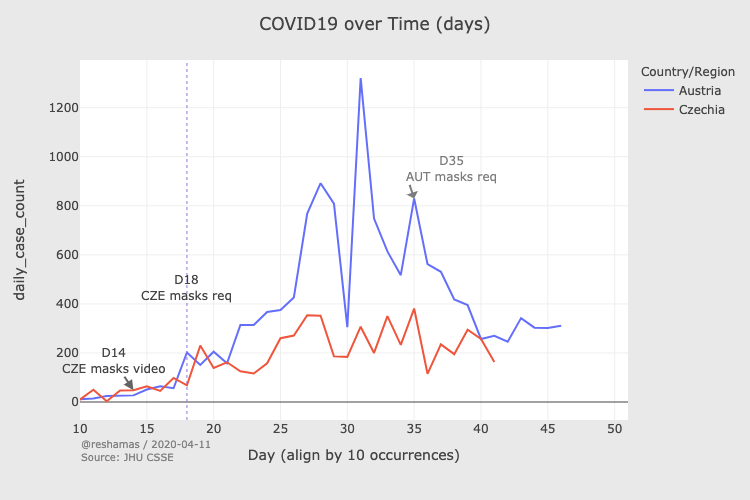

मास्क पहनने को लेकर उलझन में हैं? ये पेचीदा ज़रूर है पर इतना भी नहीं जितना कुछ लोग जता रहे हैं। हम विज्ञान की ओर देख रहे हैं (हमारे पेपर देखिए Covid-19 के खिलाफ फेस मास्क : प्रमाण की समीक्षा —84 उद्धरणों के साथ और Covid-19 संकट के समय में जनता के लिए फेस मास्क)। यह सारांश है विभिन्न प्रमाण धाराओं का, और इस सब के बारे में हमारी समझ का।
रोगों के फैलने का महामारी विज्ञान
अपने शायद पास-पास रखे डोमिनोज़ और चूहेदानी के वीडियो देखे होंगे जिनमें एक छोटी से चीज़ एक विशाल झरने को शुरू कर देती है। डोमिनोज़ (या चूहेदानी) जितने पास-पास हों उथल-पुथल उतनी ही ज़्यादा होती है। हर संक्रामक बीमारी की संचरण दर (R0) होती है। 1.0 के R0 के साथ एक बीमारी का मतलब है कि प्रत्येक संक्रमित व्यक्ति, औसतन, एक दूसरे व्यक्ति को संक्रमित करता है। एक बीमारी जिसका R0 1.0 से कम है, वह नष्ट हो जाएगी। 1918 महामारी के कारण होने वाले फ्लू के तनाव में 1.8 की R0 थी। वायरस का R0 जो COVID-19 का कारण बनता है, वह इम्पीरियल कॉलेज के शोधकर्ताओं द्वारा 2.4 का अनुमान लगाया गया था, हालांकि कुछ शोध बताते हैं कि यह 5.7 से भी अधिक हो सकता है। इसका मतलब है कि रोकथाम उपायों के बिना, COVID-19 दूर तक और तेजी से फैल जाएगा। महत्वपूर्ण रूप से, COVID-19 रोगी रोग के शुरुआती दिनों में सबसे अधिक संक्रामक हैं (To et al. 2020; Zou et al. 2020; Bai et al. 2020; Zhang et al. 2020; Doremalen et al. 2020; Wei 2020), जिसके दौरान उनके पास आम तौर पर कम लक्षण होते हैं या कोई लक्षण नहीं होते हैं।
बूंदों और एरोसोल की भौतिकी
जब आप बोलते हैं, तो आपके मुंह से छोटी सूक्ष्म बूंदें निकल जाती हैं। यदि आप संक्रामक हैं, तो इनमें वायरस के कण होते हैं। केवल बहुत बड़ी बूंदें समाप्त होने से पहले 0.1 सेकेंड से अधिक जीवित रहती हैं और छोटी बूंद नाभिक (वेल्स 1934; डुगिड 1946; मोरवास्का एट अल। 2009) में बदल जाती हैं, जो मूल बूंद से 3-5 गुना छोटे होते हैं, लेकिन फिर भी कुछ वाइरस होते हैं।
इसका मतलब है कि बूंदों को ब्लॉक करना बहुत आसान है, क्योंकि वे आपके मुंह से निकलते हैं, जब वे बहुत बड़े होते हैं, तो उन्हें अवरुद्ध करने की तुलना में क्योंकि वे एक गैर-संक्रमित व्यक्ति के चेहरे से संपर्क करते हैं जो उन बूंदों के प्राप्त करने हेतु दुसरे छोर पर होता है। किन्तु अधिकतर शोधकर्ता इस ओर नहीं देख रहे…
मास्क का भौतिक विज्ञान
मास्क की प्रभावशीलता के बारे में बहस अक्सर यह धारणा रखती है कि मास्क का उद्देश्य पहनने वाले की रक्षा करना है, क्योंकि यह बात सभी डॉक्टर मेडिकल स्कूल में सीखते हैं। इस पर कपड़े के मास्क अपेक्षाकृत खराब होते हैं (हालांकि यह पूरी तरह से अप्रभावी नहीं)। 100% सुरक्षा के लिए, * पहनने वाले * को एक उचित रूप से सज्जित चिकित्सा श्वासयंत्र (जैसे N95) की आवश्यकता होती है। लेकिन एक संक्रमित व्यक्ति द्वारा पहने जाने वाले कपड़े के मास्क * अपने आस-पास के लोगों की रक्षा करने हेतु * अत्यधिक प्रभावी * होते हैं। * इसे “स्रोत नियंत्रण” के रूप में जाना जाता है। और यह स्रोत नियंत्रण है जो इस बहस में मायने रखता है कि क्या * जनता को * मास्क पहनना चाहिए।
अगर आपको COVID-19 है और आप 8 इंच दूर से किसी पर खांसते है, तो कॉटन मास्क पहनने से उस व्यक्ति के लिए आपके द्वारा प्रसारित वायरस की मात्रा कम हो जाएगी 36 गुना, और सर्जिकल मास्क की तुलना में यह और भी अधिक प्रभावी है। अजीब है, इस तथ्य की खोज करने वाले शोधकर्ताओं ने 36 गुना कमी को “अप्रभावी” माना। हम इससे असहमत है। इसका मतलब है कि आप केवल 1/36 वें वायरस की मात्रा को प्रसारित करेंगे जो आपने अन्यथा किया होता, वायरल का लोड कम होगा, जिससे संक्रमण की संभावना कम हो सकती है, और संक्रमित होने पर कम लक्षण ।
संचरण का गणित
हमारी टीम द्वारा गणितीय मॉडलिंग, जो अन्य अनुसंधान (Yan et al. 2019) द्वारा समर्थित है, का सुझाव है कि यदि अधिकांश लोग सार्वजनिक रूप से मास्क पहनते हैं, तो संचरण दर (“प्रभावी R”) 1.0 से नीचे जा सकती है, जो पूरी तरह से बीमारी के प्रसार को रोक सकता है। मास्क को हर एक वायरल कण को ब्लॉक नहीं करना है, लेकिन जितने अधिक कण यह अवरुद्ध करता है, उतना ही प्रभावी R कम होगा ।
सिर्फ मास्क पहनना कितना प्रभावी है, यह रेखा-चित्र में चित्रित तीन चीजों पर निर्भर करता है: मास्क कितनी अच्छी तरह से वायरस (‘प्रभावकारिता’: क्षैतिज अक्ष) को अवरुद्ध करता है, जनता किस अनुपात में मास्क पहनती है (‘पालन’: ऊर्ध्वाधर अक्ष) और रोग की संचरण दर (R0: लेखाचित्र पर काली रेखाएँ)। लेखाचित्र का नीला क्षेत्र 1.0 से नीचे एक R0 को इंगित करता है, जो कि हमें बीमारी को खत्म करने के लिए प्राप्त करने की आवश्यकता है। यदि मास्क 100% कणों (लेखाचित्र के सबसे दाईं ओर) को अवरुद्ध करता है, तो भी कम पालन दर से रोग का नियंत्रण हो जाएगा। यहां तक कि अगर मास्क वायरल कणों के बहुत कम अनुपात को अवरुद्ध करते हैं, तब भी बीमारी को समाहित किया जा सकता है - लेकिन तभी जब ज्यादातर या सभी लोग मास्क पहनते हैं।
मास्क पहनने का राजनीतिक विज्ञान
आप सभी या अधिकांश लोगों को मास्क पहनने के लिए कैसे सहमत करेंगे? ठीक है, आप उन्हें शिक्षित कर सकते हैं और उन्हें मनाने की कोशिश कर सकते हैं, लेकिन एक अधिक प्रभावी तरीका यह है कि उनका मास्क पहनना आवश्यक हो, या तो विशिष्ट परिस्तिथियों में जैसे कि सार्वजनिक परिवहन या किराने की दुकानों या घर के बाहर भी हर समय। टीकाकरण (ब्रैडफोर्ड और मांडिच 2015) पर किए गए शोध से पता चलता है कि टीकाकरण की छूट के लिए उच्चतर सीमा निर्धारित करने वाले न्यायालयों में टीकाकरण की दर अधिक होती है। इसी दृष्टिकोण का उपयोग अब मास्क पहनने के अनुपालन को बढ़ाने के लिए किया जा रहा है, और प्रारंभिक परिणाम (लेफ़लर आदि - 2020) सुझाव देते हैं कि ये कानून अनुपालन बढ़ाने और Covid-19 के प्रसार को धीमा करने या रोकने में प्रभावी हैं।
मास्क पहनने के प्रयोग: कृत्रिम और प्राकृतिक
एक कृत्रिम प्रयोग तब होता है जब एक शोधकर्ता लोगों को आवंटित करता है (आमतौर पर यादृच्छिक(Random) - इसलिए Randomized Control Trial या RCT उक्ति प्रगोग होती है ) या तो मास्क पहने हुए या मास्क पहने नहीं (नियंत्रण समूह)। COVID-19 में जनता के सदस्यों द्वारा मास्क पहनने का कोई RCT नहीं किया गया है। अन्य बीमारियों (जैसे इन्फ्लूएंजा या तपेदिक) को रोकने के लिए मास्क-पहनने के RCT ने एक छोटे प्रभाव को दिखाने का प्रयास किया है जो कई अध्ययनों में सांख्यिकीय रूप से महत्वपूर्ण नहीं था। ऐसे अधिकांश अध्ययनों में, मास्क पहनने वाले समूह को सौंपे गए लोगों ने हर समय अपने मास्क नहीं पहने थे।
प्रयोग प्राकृतिक तब है जब हम किसी ऐसी चीज का अध्ययन करते हैं जो वास्तव में हो रही है - उदाहरण के लिए जब कोई देश मास्क पहनने की नीति का परिचय देता है। उदाहरण के लिए, दक्षिण कोरिया ने तेजी से सामुदायिक प्रसार किया जिसने शुरुआती हफ्तों में इटली में प्रक्षेपवक्र पर नज़र रखी। फिर, फरवरी 2020 के अंत में, सरकार ने प्रत्येक नागरिक को मास्क की नियमित आपूर्ति प्रदान की। उस बिंदु से, सब कुछ बदल गया। जैसे-जैसे इटली की मौत की संख्या भयावह स्तर पर बढ़ी, दक्षिण कोरिया ने वास्तव में कम करना शुरू कर दिया। यहाँ दक्षिण कोरिया के सक्रिय मामलों की संख्या (लाल), और इटली की (नीला) है; मार्च की शुरुआत में क्या होता है, इस पर करीब से नज़र डालें, क्योंकि मास्क वितरण का प्रभाव (दक्षिण कोरियाई विश्लेषण हयोकोन ज़्हीअंग के लिए धन्यवाद और रेशमा शेख द्वारा चित्रण):
प्राकृतिक प्रयोग वैज्ञानिक रूप से अपूर्ण हैं, क्योंकि कोई प्रत्यक्ष नियंत्रण समूह नहीं है, इसलिए हम यह सुनिश्चित नहीं कर सकते हैं कि मास्क के कारण कोई भी परिवर्तन हो। कुछ देशों में जिन्होंने मास्क पहनना शुरू किया, अन्य उपाय जैसे कि सख्त सामाजिक दूरी, स्कूल बंद करना और सार्वजनिक कार्यक्रमों को रद्द करना लगभग एक ही समय में हुआ। इन मामलों में भी, हम प्रासंगिक तुलना पा सकते हैं। उदाहरण के लिए, यूरोपीय पड़ोसी ऑस्ट्रिया और चेकिया ने एक ही तारीख को सामाजिक दूर की आवश्यकताओं की शुरुआत की, लेकिन चेकिया ने भी अनिवार्य मास्क पहनना शुरू किया। चेकिया के वक्र के चपटा होने के दौरान ऑस्ट्रियाई मामले की दर ने अपने ऊपर की ओर गति को जारी रखा। यह तब तक नहीं था जब तक कि ऑस्ट्रिया ने भी मास्क कानूनों को हफ्तों बाद पेश नहीं किया था कि दोनों काउंटियां समान प्रक्षेप पथ पर वापस आ गईं।

महत्वपूर्ण रूप से, प्रत्येक देश और हर समय अवधि में जहां कानूनों के माध्यम से मास्क उपयोग को प्रोत्साहित किया गया है, या जहां नागरिकों को मास्क प्रदान किए गए थे, मामलों और मृत्यु दर में गिरावट आई है।
मास्क पहनने का व्यहवारिक विज्ञान
कुछ लोगों ने दावा किया है कि मास्क पहनने के लिए (या दृढ़ता से प्रोत्साहित करने वाले) जोखिम भरे व्यवहार को बढ़ावा देंगे ब्रुसो आदि 2020) (उदाहरण के लिए, अधिक बाहर जाना, हाथों को कम धोना),जिसका कुल परिणाम नकारात्मक होगा, और इस प्रभाव को प्रयोगात्मक परीक्षणों में देखा गया। कुछ इसी तरह की दलीलें पहले एचआईवी की रोकथाम की रणनीतियों (कैसेल आदि 2006; रोजस कास्त्रो, डेलब्रे, और मोलिना 2019) और मोटरसाइकिल हेलमेट कानूनों (ओयूलेट 2011) के लिए की गई हैं। हालांकि, इन विषयों पर वास्तविक दुनिया के शोध में पाया गया कि भले ही कुछ व्यक्तियों ने जोखिम भरे व्यवहार के साथ प्रतिक्रिया दी, किंतु जनसंख्या स्तर पर सुरक्षा और जन-कल्याण में व्यापक सुधार हुआ (पेंग आदि 2017; ह्यूस्टन और रिचर्डसन 2007)।
मास्क पहनने का अर्थशास्त्र
आर्थिक विश्लेषण इस बात पर विचार करते हैं कि मास्क प्रदान करने में कितना खर्च होता है (वित्तीय और गैर-वित्तीय दोनों) कितना मूल्य बनाया जा सकता है - और, संभवतः, खोया जा सकता है - यदि उन्हें प्रदान किया जाता है। इस तरह के आर्थिक अध्ययन (अबेलक आदि 2020) संकेत देते हैं कि प्रत्येक व्यक्ति द्वारा पहना जाने वाला एक मास्क (जिसकी कीमत लगभग कुछ भी नहीं है) हजारों डॉलर के आर्थिक लाभ उत्पन्न कर सकता है और कई लोगों की जान बचा सकता है।
मास्क पहनने का मानवशास्त्र
कई एशियाई देशों में जनता द्वारा मास्क पहनना, आंशिक रूप से व्यक्तिगत कारणों से (प्रदूषण से बचाने के लिए) और आंशिक रूप से सामूहिक लोगों के लिए (हाल ही में MERS और SARS महामारी के परिणामस्वरूप) किया गया है। मेरा मास्क तुम्हारी रक्षा करता है; आपकी रक्षा करता है। हालाँकि, इनमें से अधिकांश देशों में नियम केवल मास्क तब पहनने के लिए है यदि आपके लक्षण हैं; यह केवल हाल के हफ्तों में हुआ है, क्योंकि स्पर्शोन्मुख प्रसार के बारे में जागरूकता बढ़ी है, इसलिए लक्षणों की परवाह किए बिना मास्क पहनना आम हो गया है।
निष्कर्ष
यह सत्य है की हर वैज्ञानिक प्रमाण मास्क पहनने का समर्थन नहीं करता, किन्तु इनमे से तो ज़्यादातर एक ही दिशा में इंगित करते है। इस साक्ष्य का हमारा मूल्यांकन हमें एक स्पष्ट निष्कर्ष पर ले जाता है: अपनी बूँद-कणो को अपने पास रखें - एक मास्क पहनें।
आप घर पर एक बना सकते हैं, एक टी-शर्ट, रूमाल या कागज तौलिया से, या यहां तक कि सिर्फ अपने चेहरे के चारों ओर एक स्कार्फ या बंडाना लपेटें। आदर्श रूप से, कसकर बुने हुए कपड़े का उपयोग करें जिसे आप अभी भी सांस ले सकते हैं। शोधकर्ता एक डिस्पोजेबल फिल्टर के रूप में कागज तौलिया की एक परत सहित सलाह देते हैं; आप बस इसे कपड़े की दो परतों के बीच स्लाइड कर सकते हैं। ऐसा कोई सबूत नहीं है कि स्रोत नियंत्रण के लिए प्रभावी होने के लिए आपके मास्क को किसी विशेष विशेषज्ञता या देखभाल के साथ बनाने की आवश्यकता है। आप कपड़े धोने में एक कपड़े का मुखौटा डाल सकते हैं और इसे पुन: उपयोग कर सकते हैं, जैसे आप एक टी-शर्ट का पुन: उपयोग करते हैं।
यदि यह पता चलता है कि आप में COVID-19 विकासशील हैं, तो जिन लोगों की आप परवाह करते हैं, उन्हें खुशी होगी कि आपने मास्क पहना था।
उपसंहार: जेरेमी द्वारा स्रोत नियंत्रण का उदाहरण
यह जेरेमी द्वारा स्रोत नियंत्रण का छोटा सा नमूना है!
This is the translation of an important post which you can read here

उद्धरण
- Abaluck, Jason, Judith A. Chevalier, Nicholas A. Christakis, Howard Paul Forman, Edward H. Kaplan, Albert Ko, and Sten H. Vermund. 2020. “The Case for Universal Cloth Mask Adoption and Policies to Increase Supply of Medical Masks for Health Workers.” SSRN Scholarly Paper ID 3567438. Rochester, NY: Social Science Research Network. https://papers.ssrn.com/abstract=3567438.
- Bai, Yan, Lingsheng Yao, Tao Wei, Fei Tian, Dong-Yan Jin, Lijuan Chen, and Meiyun Wang. 2020. “Presumed Asymptomatic Carrier Transmission of Covid-19.” Jama.
- Bradford, W David, and Anne Mandich. 2015. “Some State Vaccination Laws Contribute to Greater Exemption Rates and Disease Outbreaks in the United States.” Health Affairs 34 (8): 1383–90.
- Brosseau, Lisa M., ScD, Margaret Sietsema, PhD Apr 01, and 2020. 2020. “COMMENTARY: Masks-for-All for COVID-19 Not Based on Sound Data.” CIDRAP. https://www.cidrap.umn.edu/news-perspective/2020/04/commentary-masks-all-covid-19-not-based-sound-data.
- Cassell, Michael M, Daniel T Halperin, James D Shelton, and David Stanton. 2006. “Risk Compensation: The Achilles’ Heel of Innovations in Hiv Prevention?” Bmj 332 (7541): 605–7.
- Doremalen, Neeltje van, Trenton Bushmaker, Dylan H. Morris, Myndi G. Holbrook, Amandine Gamble, Brandi N. Williamson, Azaibi Tamin, et al. 2020. “Aerosol and Surface Stability of SARS-CoV-2 as Compared with SARS-CoV-1.” New England Journal of Medicine 0 (0): null. https://doi.org/10.1056/NEJMc2004973.
- Duguid, JP. 1946. “The Size and the Duration of Air-Carriage of Respiratory Droplets and Droplet-Nuclei.” Epidemiology & Infection 44 (6): 471–79.
- Houston, David J, and Lilliard E Richardson. 2007. “Risk Compensation or Risk Reduction? Seatbelts, State Laws, and Traffic Fatalities.” Social Science Quarterly 88 (4): 913–36.
- Leffler, Christopher, Edsel Ing, Craig A. McKeown, Dennis Pratt, and Andrzej Grzybowski. 2020. “Country-Wide Mortality from the Novel Coronavirus (COVID-19) Pandemic and Notes Regarding Mask Usage by the Public.”
- Morawska, LJGR, GR Johnson, ZD Ristovski, Megan Hargreaves, K Mengersen, Steve Corbett, Christopher Yu Hang Chao, Yuguo Li, and David Katoshevski. 2009. “Size Distribution and Sites of Origin of Droplets Expelled from the Human Respiratory Tract During Expiratory Activities.” Journal of Aerosol Science 40 (3): 256–69.
- Ouellet, James V. 2011. “Helmet Use and Risk Compensation in Motorcycle Accidents.” Traffic Injury Prevention 12 (1): 71–81.
- Peng, Yinan, Namita Vaidya, Ramona Finnie, Jeffrey Reynolds, Cristian Dumitru, Gibril Njie, Randy Elder, et al. 2017. “Universal Motorcycle Helmet Laws to Reduce Injuries: A Community Guide Systematic Review.” American Journal of Preventive Medicine 52 (6): 820–32.
- Rojas Castro, Daniela, Rosemary M Delabre, and Jean-Michel Molina. 2019. “Give Prep a Chance: Moving on from the ‘Risk Compensation’ Concept.” Journal of the International AIDS Society 22: e25351.
- To, Kelvin Kai-Wang, Owen Tak-Yin Tsang, Wai-Shing Leung, Anthony Raymond Tam, Tak-Chiu Wu, David Christopher Lung, Cyril Chik-Yan Yip, et al. 2020. “Temporal profiles of viral load in posterior oropharyngeal saliva samples and serum antibody responses during infection by SARS-CoV-2: an observational cohort study.” Lancet Infect. Dis. 0 (0). https://doi.org/10.1016/S1473-3099(20)30196-1.
- Wei, Wycliffe E. 2020. “Presymptomatic Transmission of SARS-CoV-2 — Singapore, January 23–March 16, 2020.” MMWR. Morbidity and Mortality Weekly Report 69. https://doi.org/10.15585/mmwr.mm6914e1.
- Wells, WF. 1934. “On Air-Borne Infection: Study Ii. Droplets and Droplet Nuclei.” American Journal of Epidemiology 20 (3): 611–18.
- Yan, Jing, Suvajyoti Guha, Prasanna Hariharan, and Matthew Myers. 2019. “Modeling the Effectiveness of Respiratory Protective Devices in Reducing Influenza Outbreak.” Risk Analysis 39 (3): 647–61. https://doi.org/10.1111/risa.13181.
- Zhang, Juanjuan, Maria Litvinova, Wei Wang, Yan Wang, Xiaowei Deng, Xinghui Chen, Mei Li, et al. 2020. “Evolving Epidemiology and Transmission Dynamics of Coronavirus Disease 2019 Outside Hubei Province, China: A Descriptive and Modelling Study.” The Lancet Infectious Diseases 0 (0). https://doi.org/10.1016/S1473-3099(20)30230-9.
- Zou, Lirong, Feng Ruan, Mingxing Huang, Lijun Liang, Huitao Huang, Zhongsi Hong, Jianxiang Yu, et al. 2020. “SARS-CoV-2 Viral Load in Upper Respiratory Specimens of Infected Patients.” New England Journal of Medicine 382 (12): 1177–9. https://doi.org/10.1056/NEJMc2001737.